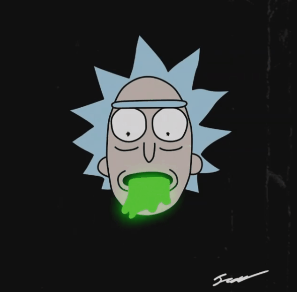

<ion-header>
    <ion-toolbar color="success">
        <ion-buttons slot="start">
            <ion-back-button defaultHref="characters-list"></ion-back-button>
        </ion-buttons>
    </ion-toolbar>
</ion-header>

<ion-content *ngIf="flag" color="dark">
    <!-- Character Profile Picture -->
    
    <ion-text>
        <h1> {{user.firstName}} {{user.lastName}}</h1>
        <p> {{user.email}} </p>
    </ion-text>

    <!-- Favorites List  -->
    <ion-list>
        <ion-item color="light" routerLink="/character-profile">
            <ion-avatar slot="start">
                
            </ion-avatar>
            <ion-label> Favorite </ion-label>
        </ion-item>
    </ion-list>

    <ion-button expand="block" color="secondary" (click)="logout()"> Logout </ion-button>


</ion-content>